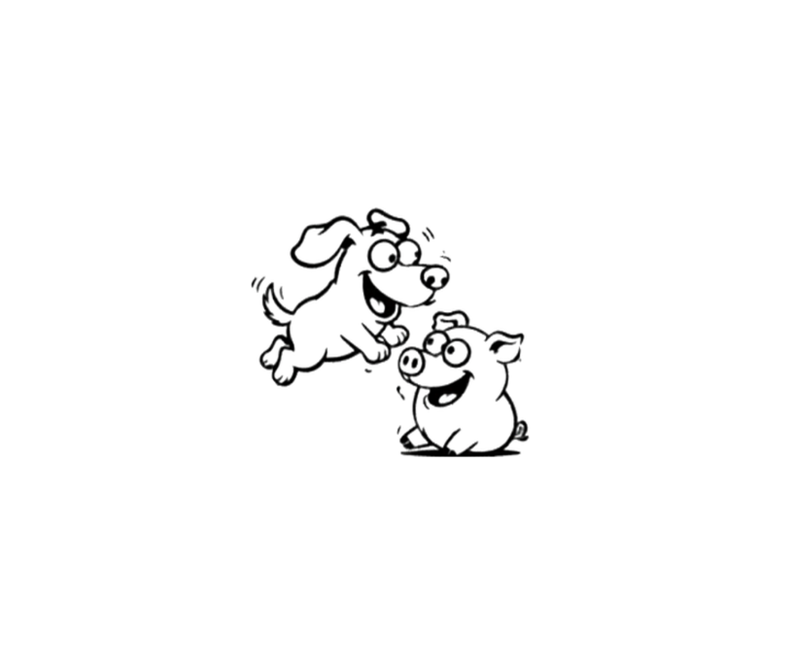

この記事でわかること
ポイント
- 豚が泥に入る理由は、体を清潔に保つための行動だった
- 泥は体温調整・虫よけ・日焼け対策に役立つ
- 犬・猫・鶏と比べても、豚の衛生行動はかなり独自性が高い
- 「きれい好き」は動物ごとに異なる進化の結果だった
なぜ泥の中に入るのか
豚にとっての泥は「お風呂」
多くの人は、豚が泥の中にいる姿を見て「汚い」と感じます。けれど、豚の体は汗腺がほとんど発達していません。人間のように汗をかいて体温を調節することが苦手なので、泥を体に塗ることで熱を逃がしやすくし、強い日差しから皮膚を守っています。
つまり、豚にとって泥は、ただの遊びではなく、自然のスキンケアと呼ぶべきものです。
衛生行動としての役割
泥は「体温調整」「虫よけ」「日焼け止め」
豚が泥に入ることで得られる効果は、次の3つです。
- 体温を下げる： 乾くときに熱を奪ってくれるため、暑い日でも過熱しにくい
- 虫よけ： ダニや虫を寄せ付けにくくするバリアになる
- 日焼け対策： 皮膚を守る薄い膜のような役割を果たす
犬・猫・鶏との比較
動物ごとに"きれい"のやり方が違う
| 動物 | 清潔を保つ方法 | 特徴 |
|---|
| 🐷 豚 | 泥浴び | 体温調整・虫よけ・日焼け対策に強い |
| 🐱 猫 | 毛づくろい | 舌の構造を使って皮膚や毛並みを整える |
| 🐶 犬 | 散歩やしつけ、シャンプー | 人間との関係の中で清潔を保つ傾向がある |
| 🐔 鶏 | 砂浴び | 羽や皮膚の汚れを落とし、寄生虫対策に役立つ |
このように、動物の「きれい好き」は、生きた環境と体の構造によって全く異なります。豚の泥浴びは、まさにその進化の結果です。
まとめ
豚の泥は「汚れ」ではなく、賢い衛生戦略
豚が泥に入るのは、見た目のためではありません。体を守るための知恵なのです。暑さから身を守り、皮膚を守り、虫から身を守る——この一連の行動は、豚が自然の中で生き延びるための高度な戦略でした。
次に豚を見たときは、「なぜ泥に入るのか」を少しだけ考えてみると、動物の世界の奥深さが見えてきます。
参考文献
主要な研究論文・学術資料
- オックスフォード大学 動物行動研究チーム — "The spatial organization of behavior in Sus scrofa domesticus"（家畜豚における行動の空間的配置について）
- ケンブリッジ大学 学術誌 Animal Behaviour — "Domestic pig welfare and hygiene preferences"（家畜豚の福祉と衛生の好みに関する研究）
- 国際行動生物学会（ISAE） — "Comparative analysis of eliminative behavior in domestic dogs and cats"（犬と猫における排泄・衛生行動の比較分析）
- 応用動物行動科学（Applied Animal Behaviour Science） — "Dustbathing behavior and skin hygiene in Gallus gallus domesticus"（ニワトリにおける砂浴び行動と皮膚の衛生について）